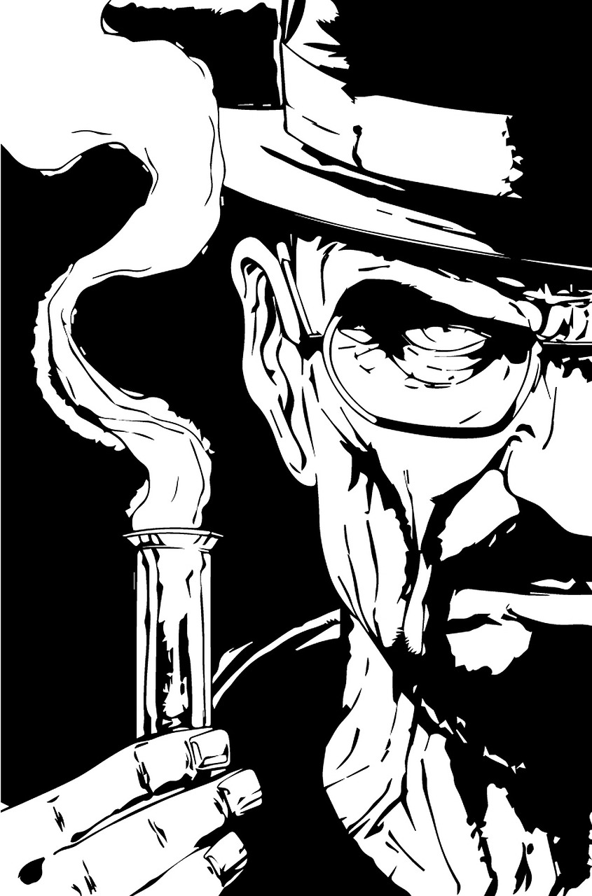

Dans la première saison de "Breaking Bad", nous suivons l'histoire de Walter White, un professeur de chimie talentueux mais sous-payé qui mène une vie banale et monotone avec sa femme enceinte, Skyler, et leur fils adolescent, Walter Jr. Lorsque Walter apprend qu'il est atteint d'un cancer du poumon en phase terminale, il réalise que sa famille sera laissée sans ressources financières une fois qu'il ne sera plus là pour les soutenir. Désespéré de trouver un moyen de garantir un avenir financier à sa famille après sa mort, Walter décide de mettre ses compétences en chimie à profit en se lançant dans la fabrication de méthamphétamine, une drogue hautement addictive. Il entreprend cette entreprise risquée avec l'aide de Jesse Pinkman, un ancien élève devenu petit trafiquant de drogue. Au fil de la saison, nous suivons Walter et Jesse dans leur tentative de se frayer un chemin dans le monde impitoyable du trafic de drogue. Ils rencontrent divers obstacles et défis, notamment des rivaux dans le milieu criminel, des confrontations avec la police et des dilemmes moraux quant à leurs actions. Pendant ce temps, Walter lutte pour maintenir un équilibre entre sa vie de famille et son activité criminelle secrète. Il doit jongler entre les mensonges qu'il raconte à sa famille pour justifier ses absences et les dangers croissants auxquels il est confronté en tant que fabricant de drogue. La première saison de "Breaking Bad" explore les thèmes de la moralité, de la culpabilité et de la transformation personnelle alors que Walter se plonge plus profondément dans le monde sombre et dangereux dans lequel il a choisi de s'aventurer.
Ce que j'aime beaucoup de cette série c'est l'écriture. La série semble irréelle et impossible en lisant la description, mais de la façon que la série est écrite la situation de Walter White pour s'avérer réelle. Le Réealiste de chaque événement est possible et il n'y rien d'exagérer. J'ai même vu des vidéos sur youtube de chimistes qui parlait des expériences scientifiques faites dans la série et à quel point c'est réaliste. En plus d'être bien acté dans la série les personnages ont tout pleins de réaction et d'émotions différentes au cour des 5 saisons.